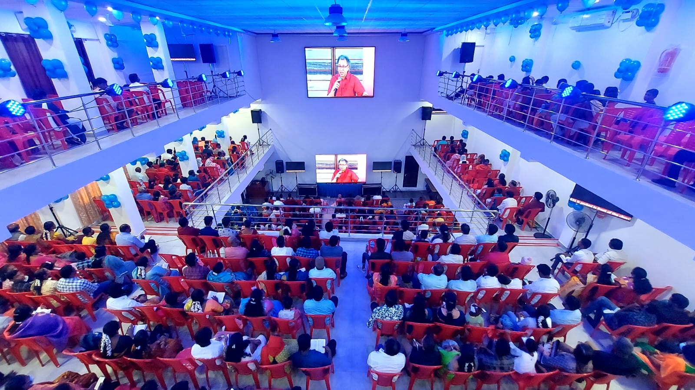
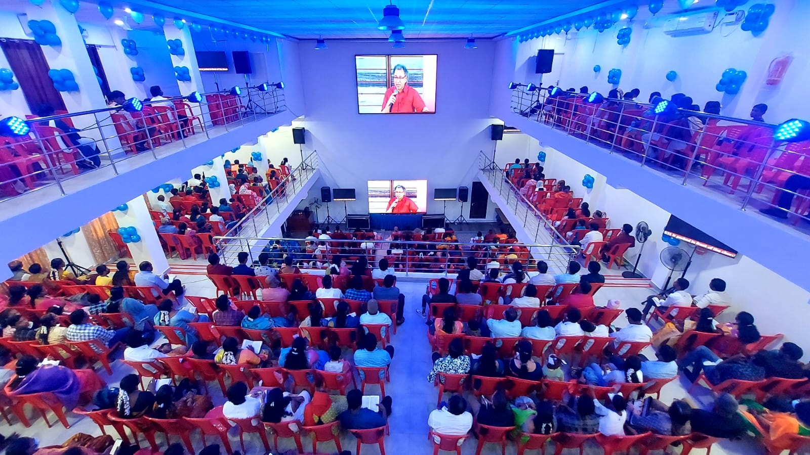

ABOUT OUR CHURCH
NEW LIFE CHURCH
Our Church is a Christ-centered community built on faith, prayer and the unchanging Word of God. Established over 60 years ago, our church stands as a living testimony to God's faithfulness across generations.
What began as a small step of obedience has grown into a spiritual home where believers gather to worship, grow and serve together as one body in Christ. Rooted in Biblical truth, we remain committed to preserving the spiritual foundation laid by our forefathers while continuing to move forward with renewed vision and purpose.
Through every season, God has been our strength, guide and provider.
One-body-in-Christ! 
